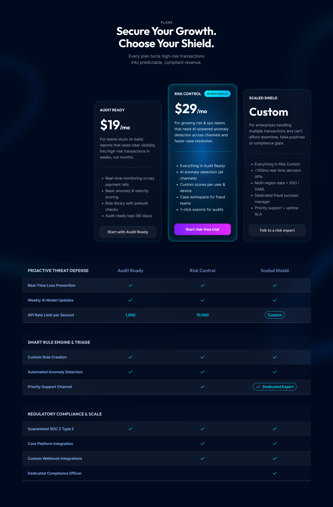
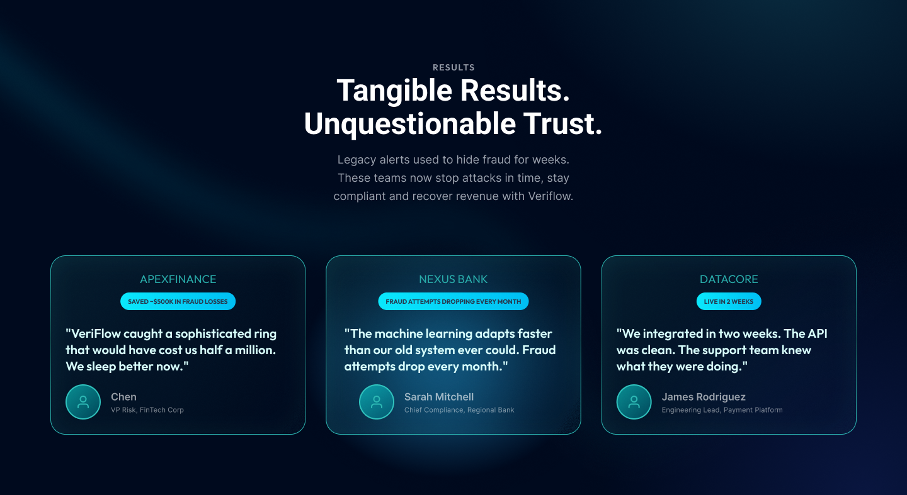
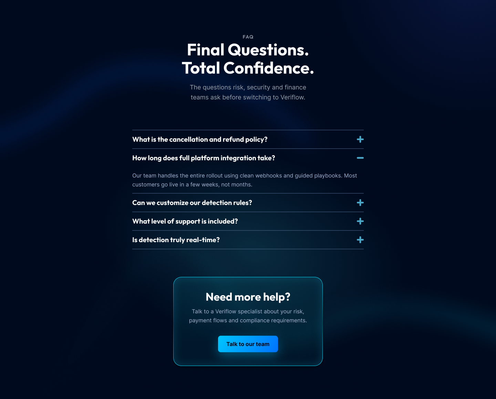
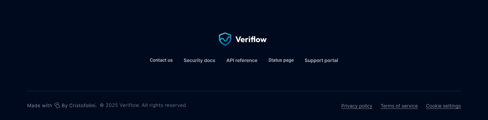

Veriflow is a B2B SaaS platform that needed a pricing experience that matched the product. The original page made it hard to compare tiers, mixed billing models and pushed most teams to talk to sales before they were ready. This case study walks through how I restructured the plans, clarified value props per tier and aligned copy, layout and visual hierarchy with the rest of the product to support both self-serve and sales-assisted motions.

I redesigned the plan structure to reflect risk maturity rather than pure feature count. Visual emphasis on the recommended tier and concise “who this is for” labels help teams quickly land on the right plan without overthinking.

Data-visualization blocks show fraud losses, compliance status and performance at scale. These components turn abstract risk into concrete numbers, making the subscription feel cheaper than the cost of inaction.

Recognizable customer logos are paired with outcome-focused quotes. Placing this block near the final CTA lowers perceived risk and makes switching to the platform feel safer than staying with legacy tools.

A structured FAQ addresses cancellation, integration time, data handling and support level—the questions finance and security teams ask before signing. The credibility footer reinforces trust with security and legal links, closing the journey with operational clarity.

The absolute final section is a clean, minimalistic Credibility Footer. This element does not contain a conversion CTA, but serves to reinforce trust by providing essential utility links (Contact us, Security docs, Privacy policy, Terms of service) and copyright information. This adherence to best practices closes the page professionally.

The Outcome: The page structure and visual hierarchy I designed demonstrates a validated strategy expected to deliver significant CR uplift by addressing user anxieties and financial barriers. This result proves my ability to design for Monthly Recurring Revenue (MRR).
Key Takeaway: Senior UI/UX Design is not just about aesthetics; it is a Profit Center. Strategic design, informed by data and focused on addressing user anxieties and highlighting financial value, is the quickest path to a measurable ROI.